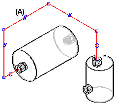
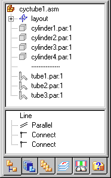
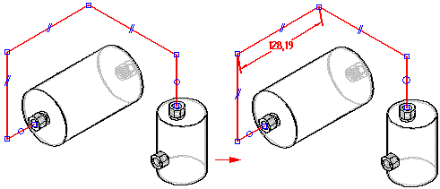
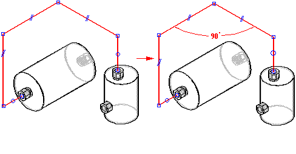
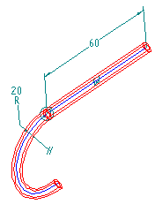

Applying relationships and dimensions to path segments
As you add segments to the tube path, relationship handles are displayed on the segments (A) to indicate the relationships that you are creating. You can display or hide the relationship handles with the Relationship Handles command.

There are four types of geometric relationships for tube parts:
The PathFinder tab displays the tube path segment relationships.
You can delete any relationship by deleting its handle in the graphic window or deleting the relationship in PathFinder.

Notice the dashed line separating cylinder4.par and tube1.par. This dashed line indicates that parts below the line are directed parts.
Creating linear dimensions on paths
You can use the Axis Dimension command to create a dimension along a principal axis between a path segment and a reference element. The reference element can be another path segment, a principal plane, or a part edge.

Creating angular dimensions on paths
You can use the Angle command to place a dimension that measures the angle between two endpoint-connected tube path segments.

Dimensioning path segments
You can use the SmartDimension command to dimension the length of a linear path segment or the radius of an arc path segment.

How do I
Apply an axis dimension relationshipApply a Tangent relationship to a tube path segment
Apply a parallel relationship to a tube path segment
Apply a connect relationship to a tube path segment
Apply a coaxial relationship to a tube path segment
Look up more details
Axis Dimension commandAxis Dimension command bar
Tangent command (XpresRoute environment)
Parallel command
Connect command
Coaxial command